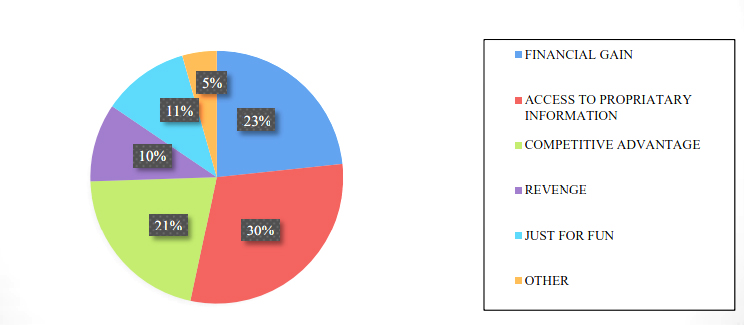

Introduction
Social Engineering, otherwise called human hacking, is the specialty of fooling workers and buyers into uncovering their qualifications and afterward utilizing them to get to organizations or records. It is a programmer’s precarious utilization of trickery or control of individuals' propensity to trust, be corporative, or essentially follow their craving to investigate and be interested. Refined IT security frameworks can't safeguard frameworks from programmers or guard against what is by all accounts approved admittance. Individuals are handily hacked, making them and their online entertainment posts high-risk assault targets. It is frequently simple to get PC clients to taint their corporate organization or mobiles by tricking them to parody sites or potentially fooling them into tapping on destructive connections or potentially downloading and introducing vindictive applications as well as indirect access'.
As to human weakness of social designing note that while social designing is distinguished as a low-tech assault; the assault focuses on controlling casualties to unveil private data and is fruitful in its endeavor due to taking advantage of character weaknesses. Social designing as a strategy sends procedures to acquire admittance to private and secret data by taking advantage of defects in human rationale know as mental predispositions. While security innovation estimates point at further developing data framework security, human factors address a failure point which is taken advantage of during a social designing assault. Five of the most well-known sorts of social designing assaults to target casualties which include:
Phishing - Phishing tricks endeavor to acquire individual data like names, addresses and other individual recognizable data (PII) like social security numbers. Phishing tricks might insert connects to divert clients to dubious sites that seem real. These kinds of tricks make a need to get moving to control clients to act in a way that difficulties great judgment.
Pretexting - This kind of friendly designing assault is driven by a creation situation endeavoring to affirm and take individual data from an objective. High level assaults endeavor to take advantage of a coming of an association or organization. This technique requires the aggressor to construct a dependable story that leaves pretty much nothing space to address uncertainty by an objective. The methodology is to use dread and direness while building a feeling of trust with a casualty to affirm or get looked for data.
Teasing - Baiting is like a phishing assault, yet baits a casualty through temptation systems. Programmers utilize the bait of guaranteed products in the event that a client gives up sign in certifications to a particular site. Bedeviling plans are not restricted to, computerized on-line plots and can additionally be sent off using actual media.
Compensation - Similar to Baiting, however this sort of danger is introduced as a specialized assistance in return for data. A typical danger is for an assailant to imitate a data innovation agent and proposition help to a casualty who might be encountering specialized difficulties. The aggressor expects to send off malware on a client's framework.
Figure - Motivations for Social Engineering
Social engineering and its role in cyber theft
Programmers are getting progressively complex and skilled at their social designing assaults. They are ready to sort out different information from different sources and in particular, online entertainment, corporate sites, furthermore, information and to pull urgent and key meticulously information from benevolent workers, which these digital crooks use to go after organizations and take priceless information and even hold partnerships prisoner what's more, at times harm the object of their objectives. As to ascent of cybercrime and burglary, recognizes key markers regarding the ascent and reason for cybercrime which monetarily influences both people and associations. One justification for digital robbery request is the advantage of burglary by equivocalness. Web violations are committed by large number of digital crooks around the world, yet few are indicted and imprisoned. Furthermore, digital crooks don't need to be savvy to find true success in advanced burglary, yet are ready to face challenges on account of the advantages of distance from a casualty while facing little challenge and little openness
Preventive measures against social engineering
It is clear that paying little mind to how mechanically secure an organization appears to be the human component will continuously be a weakness. The achievement rate and the number of cybercrimes are consistently on the ascent due to the degree of obscurity social designing offers malignant entertainers. Organizations need to remain insightful of the different danger entertainers and their plenty of assaults so they can answer as needs be. There are specialized and non-specialized shields that can be executed to bring down the gamble related with social designing to a mediocre level. Organizations are adding various layers to their security conspires so that if the component in the external layer comes up short, an instrument in something like one inward layer can assist with keeping a danger from transforming into a catastrophe (Risk Mitigation). This idea is known as multi-facet safeguard or guard inside and out. A decent Safeguard in Depth structure incorporates a combination of the following prudent steps:
Security Policy - An elegantly composed approach ought to incorporate specialized and nontechnical methodologies that are descending driven by chief administration. Each association ought to coordinate security into their functional targets.
Training - Employees should be expected to go to introductory preparation during direction also, repeating boost stages of preparation. This forms mindfulness by presenting clients to regularly utilized strategies and ways of behaving designated by a social architect.
Network Guidance - The association need to shield the organization by whitelisting approved sites, utilizing Network address interpretation (NAT), what's more, incapacitating unused applications and ports. Network clients need to keep up with complex passwords that are changed like clockwork.
Specialized Procedures - The organization ought to have various layers of guard to safeguard information and center foundation. Programming like Intrusion Prevention Frameworks (IPS), Intrusion Detection Systems (IDS) furthermore, firewalls ought to be introduced on each gadget. Neutral grounds (DMZ), web channels and Virtual Private Network (VPN) ought to be introduced on all outer confronting administrations.
For more information, Read our chapter on Social Engineering
Stay Secured !